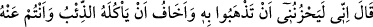
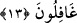
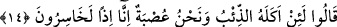
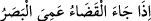

13. (Babaları) Dedi ki: “Onu götürmeniz beni üzer. Siz ondan habersizken onu
kurt yemesinden korkarım.”
Babası “Dedi ki: “Onu götürmeniz beni üzer.” Bunun sebebi ondan ayrı kalmanın
bana çok sıkıntı vermesi ve onun başına bir şey gelmesine sabredemememdir. Bunun
yanında “Siz ondan habersizken” temâşâya dalıp ondan bihaber olduğunuzda “onu kurt
yemesinden korkarım.” Çünkü o bölgede çok kurt vardı. “Hüzün/üzülme”, sevilenin
elden gitmesiyle kalbin duyduğu elemdir. “Havf/korku” ise kötü bir şey gerçekleşeceği
için nefsin rahatsızlık duymasıdır. Bu mânâ farkından dolayı âyette Yâkub (a.s.)’ın
Yûsuf’la beraberlik ve birlikteliğinin devam etmesini engelleyen ‘götürme’ fiili ‘hüzn’e
isnâd edilirken, Yûsuf’un başına gelmesi (sadece) beklenti dahilinde olan ‘kurt yemesi’
‘korku’ya isnâd edilmiştir.
Kurdun gelip onu yemesinden gafil olmanızdan korkarım
Gafletten onun ne halde olduğunu görmezsiniz
Bu mihnetli köhne evde, sahrâda
Eski kurt onun üzerinde dişlerini keskin eder
Rivâyete göre Yâkub (a.s.) rüyasında kendisini bir dağın başında; Yûsuf’u ise bir
sahrâda gördü. On bir tane kurt Yûsuf’a saldırdı. Yûsuf aralarından kayboldu. İşte bu
sebeple Yâkub (a.s.) oğullarını, kurdun yemesine karşı dikkatli olma konusunda
uyarmıştır. Ancak buna rağmen yine de Yûsuf’u onlara teslim etmiştir. Çünkü “ Geldiği zaman kader/Kör olur bütün gözler.”
Bu da ilâhî hükmün ve kaderin tesirindendir
Kuyuyu görürsün, ondan sakınmaya kâdir olamazsın
14. “Dediler ki: “Biz bir topluluk olduğumuz halde, onu kurt yerse, o zaman biz
gerçekten âciz kimseler sayılırız.”
“Dediler ki:” Vallahi “biz bir topluluk olduğumuz halde” halbuki biz güçlü bir
topluluk ve oldukça mücessem adamlarız ki bizden her birimiz on aslanla muhârebede
mukavemet etmesi mümkündür, “onu kurt yerse, o zaman biz gerçekten âciz kimseler
sayılırız.” Doğrusu biz kardeşimiz Yûsuf’u kurda verirsek elbette ziyan işlemiş oluruz.
Zaaf, beceriksizlik ve acizlikten helak olmuş oluruz.